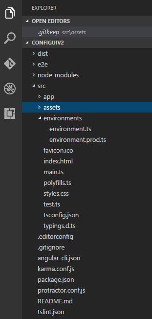

The Angular CLI cli.angular.io

The Angular CLI effectively takes all those configuration and setup steps shown above and condenses it down into one quick line:
ng new configui-v2There are many things that the CLI can do so let's get it installed and walk through some features.
# Installing the Angular CLI
To install the CLI, we'll use Node and npm.
npm install -g angular-cliThat's it! Now we can start using the CLI to build out our applications.
# Starting a New Application
To start a new application, just run the command we saw earlier:
ng new configui-v2So what exactly does this do for us? Let's take a look at the newly generated folders and files:
 CONFIG UI Directory structure
// end-to-end-tests
|- e2e/
|----- app.e2e-specs.ts
|----- app.po.ts
|----- tsconfig.json
// npm dependencies
|- node_modules/
// Distrubtion Folder, built things go here
|- dist/
// where most of the work will be done
|- src/
|----- app/
|----- shared/
|----- index.ts
|----- environment.ts
|----- index.ts
|----- assets/
|----- environment/
// our first generated component
|----- program-details.component.css|html|spec.ts|ts
|----- favicon.ico
|----- index.html
|----- main.ts
|----- polyfill.ts
|----- styles.css
|----- system-config.ts
|----- tsconfig.json
|----- typings.d.ts
// overall configuration
|- typings/
|- .editorconfig
|- .gitignore
|- angular-cli.json
|- package.json
|- tslint.json
|- typings.jsonApplication that the Angular CLI generates follows the recommended app structure and style guide.
The majority of our application is under src/app. This is where we will be working and everything that
gets compiled and is available to our final application will be built to the dist folder.
The Angular CLI will not only create the
files and folders, it will also install any npm dependencies required.
Here is the default package.json that gets created:
{
"name": "configuiv2",
"version": "0.0.0",
"license": "MIT",
"angular-cli": {},
"scripts": {
"start": "ng serve",
"lint": "tslint \"src/**/*.ts\"",
"test": "ng test",
"pree2e": "webdriver-manager update",
"e2e": "protractor"
},
"private": true,
"dependencies": {
"@angular/common": "2.0.0",
"@angular/compiler": "2.0.0",
"@angular/core": "2.0.0",
"@angular/forms": "2.0.0",
"@angular/http": "2.0.0",
"@angular/platform-browser": "2.0.0",
"@angular/platform-browser-dynamic": "2.0.0",
"@angular/router": "3.0.0",
"core-js": "^2.4.1",
"rxjs": "5.0.0-beta.12",
"ts-helpers": "^1.1.1",
"zone.js": "^0.6.23"
},
"devDependencies": {
"@types/jasmine": "^2.2.30",
"angular-cli": "1.0.0-beta.15",
"codelyzer": "~0.0.26",
"jasmine-core": "2.4.1",
"jasmine-spec-reporter": "2.5.0",
"karma": "1.2.0",
"karma-chrome-launcher": "^2.0.0",
"karma-cli": "^1.0.1",
"karma-jasmine": "^1.0.2",
"karma-remap-istanbul": "^0.2.1",
"protractor": "4.0.5",
"ts-node": "1.2.1",
"tslint": "3.13.0",
"typescript": "2.0.2"
}
}
All those dependencies are added and included in our src/main.js file. All of the setup that was
in the Angular quickstart are now taken care of for us.
Check out the main.ts file
import './polyfills.ts';
import { platformBrowserDynamic } from '@angular/platform-browser-dynamic';
import { enableProdMode } from '@angular/core';
import { environment } from './environments/environment';
import { AppModule } from './app/';
if (environment.production) {
enableProdMode();
}
platformBrowserDynamic().bootstrapModule(AppModule);
ng new options
--dry-run(aliasd): Only output the files created and operations performed. It doesn't actually create the project.--verbose(aliasv): Show more information--skip-npm: Don't run any npm commands like installing dependencies--skip-git: Don't create a new git repo for this project--directory: Specify the directory you want to create this project in
# Serve Our Application
The Angular CLI let's us do this with one simple command:
ng serveJust like that, the Angular CLI will build a server for us with Node and open up our browser.
Angular CLI Serve Features
What features are given to us with our new server?
- Built with BrowserSync: Reload on saves
- Found in the browser at http://localhost:4200
# Generate Parts of Your Application
This is where things get interesting. So far we've just created and instantiated a new project. The ng generate command can do so much for us:
- Create a new component
- Create a new directive
- Create a new route
- Create a new pipe
- Create a new service
That's a ton of functionality and helps speed up development. First let's talk about the options that we can use for all of the above.
# Generating a New Component
Components are the foundation of Angular development. Let's generate a new component:
ng generate component program-detailNote: It's important to name your component simply. If a component is created with the name program-detail,
these are the corresponding naming schemes:
- Folder:
program-detail - Files: `program-detail.component.[css,html,spec.ts,ts]
- Class:
ProgramDetailComponent
Here are the files that get created:
|- src/
|----- app/
|----- program-detail/
|----- shared/
|----- index.ts
|----- program-detail.component.css|html|spec.ts|ts
|----- index.tsOur new component is relegated to its own folder within the src/app folder.
# Generating a New Route
Routes give us a top level view of our application. We can generate them with:
ng generate route aboutNow we have our new files in a weird new folder under src/app. Our new folder is +about.
What's up with that?
Routing is where the lazy loading takes place, and the route is generated for us via the CLI. Generating a route
with the CLI generates a new component and its routing. Let's take a look at the src/app/+about folder:
|----- +about/
|----- shared/
|----- index.ts
|----- about.component.css|html|spec.ts|tsThat looks awfully similar to when we ran ng generate component hello. That's because it's a component,
just like our HelloComponent.
You can see that the ROUTER_DIRECTIVES AND THE ROUTER_PROVIDERS were imported into our
application, injected into our top-level component, and routed using the @Routes() decorator.
import { Component } from '@angular/core';
import { AboutComponent } from './+about';
import { Routes , ROUTER_DIRECTIVES, ROUTER_PROVIDERS} from '@angular/router';
@Component({
moduleId: module.id,
selector: 'program-details',
templateUrl: 'program-detail.component.html',
styleUrls: ['program-detail.component.css'],
directives: [ROUTER_DIRECTIVES],
providers: [ROUTER_PROVIDERS]
})
@Routes([
{path: '/about', component: AboutComponent}
])
export class ProgramDetailsAppComponent {
title = 'program-details works!';
}We don't have to worry about routing anything, or loading component files when a user visits that route. It's all loaded for us!